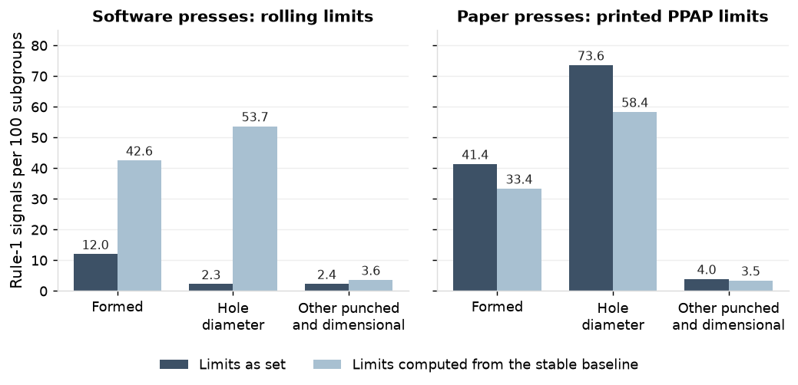
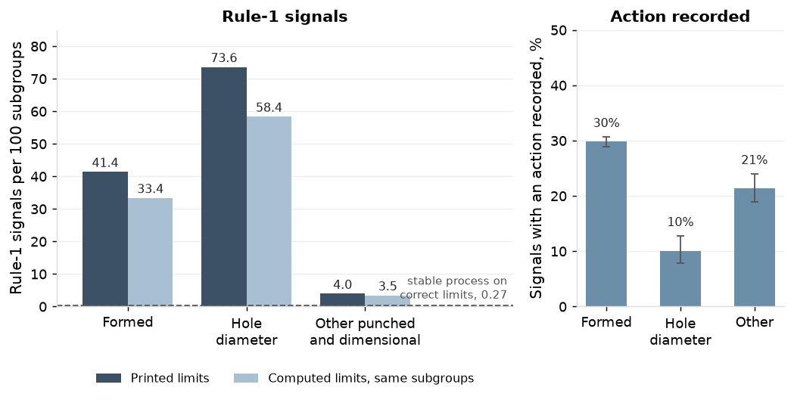
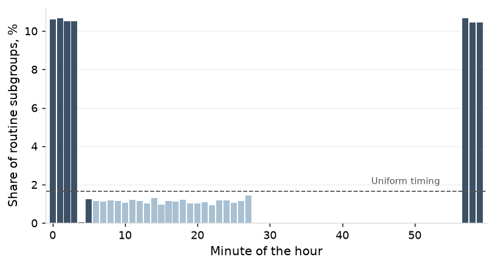

Progressive-die metal stamper, about 110 employees, eleven presses, one plant; IATF 16949 certified. The record from 1 January 2023 to 31 December 2024, with the assessment's own studies of January 2025; SPC software and paper charts, press monitors, ERP, QMS, die maintenance log, calibration system, accounting and gauge study worksheets. Dimensions in millimetres. PPAP elements 8, 9 and 11; IATF 16949 9.1.1.1.
Created by Brian Davis, 2026
1. Findings
Charts and limits. On 210 formed characteristics and hole diameters on the software presses, the rolling limits flagged 18.5% of the subgroups that limits fixed from a stable baseline flag. On the paper presses the printed limits signalled on 22.5% of subgroups and an action was recorded on 28.0% of signals (Section 2).
Capability. On 84 critical formed characteristics the PPAP Ppk is 1.85 and the production Ppk is 1.03 (0.98 to 1.10, 34,043 subgroups on 100 studies); 55% of the overall variance is between coils (Section 3).
Risk window and sorting. Between routine checks 1,010 to 21,113 parts pass by part; 12 of the 15 sorting events of 2024 trace to a die event between two checks (Section 4).
Measurement. Check fixture F-20417 consumed 31.2% of tolerance and F-31102 33.6%, against 8.9% and 8.4% at PPAP; the burr check agreed with the burr gauge on 80% of calls (Section 5).
Adjustment. 23.4% of points beyond two sigma carry a recorded adjustment, and subgroup means on the characteristics adjusted at the press carry a within-coil autocorrelation of -0.15 against -0.07 on the others (Section 6).
Die wear. On 41 of 124 dies the stated sharpening interval is longer than the shot count at which burr reaches 80% of its limit, and 54 of the 55 burr nonconformances of 2024 fell on runs that carried the die past its stated interval (Section 7).
Recording. 65.2% of routine checks are stamped within five minutes of the hour; the night shift records 84% of planned checks against 94% on days (Section 8).
2. Charts and limits
The software's rolling limits follow the process, and the printed limits on the paper presses sit off the process centre. On other punched and dimensional characteristics, where neither coil shifts nor wear dominate, the rolling limits flag 42% of what baseline limits flag. The gap on formed characteristics is not a case for fixed within-subgroup limits there; Sections 3 and 7 give what those characteristics carry between coils and with wear.

Figure 1. Each pair of columns is one class of characteristic. The dark column is how often the shop's own limits signalled in 2024, the light column how often limits computed from a stable baseline after each sharpening signal on the same subgroups. The rolling limits on the software presses signal far less often than fixed limits on formed characteristics and hole diameters, and the printed limits on the paper presses signal more often.

Figure 2. The left panel sets the signal rate under the printed limits beside the rate freshly computed limits give on the same subgroups, with the rate of a stable process on correct limits as a dashed line. The right panel is the share of printed-limit signals with an action recorded, with its 95% interval. Most of the signalling on formed characteristics and hole diameters is there under any within-subgroup limits, and the printed limits add to it.
On the software presses every one of the 10,688 alarms of 2024 was acknowledged with a text; 4,822 of the texts are one word and 1,866 alarms carry a recorded adjustment. Limits on the paper charts were set at the most recent rebuild on 54 of 57 dies, and on the other 3 the record does not reach back to the date.
Figure 3. Each point is one die on the paper presses at 31 December 2024. The horizontal position is how long its printed limits had been in force and the vertical position how many times the die had been sharpened since; the open points are dies whose limits predate the die log in the record. Limits are set at the rebuild and not recomputed at a sharpening, so the count rises with the months.
3. Subgrouping and capability
The Ppk filed at PPAP is 0.81 above the production Ppk on critical formed characteristics, and at least 0.40 above it on 91 of 100 studies. On punched characteristics the two agree within 0.25 on 33 of 56; the others are hole diameters, which Section 7 takes up.
Figure 4. Each point is one PPAP study: the Ppk filed from 300 consecutive pieces on the CMM against the Ppk of the production record on the check fixture over the months after it, with the 95% interval of the production figure as a light bar. Points on the diagonal are studies where the two agree; the dashed line is 1.33. Punched characteristics sit near the diagonal and formed characteristics well below it.
Figure 5. Each bar divides the overall variance of a class of characteristic into three parts, as the median across studies. On formed characteristics more than half lies between coils; on punched characteristics nearly all is within the subgroup.
A coil's level on a formed height follows the thickness and hardness on its certificate: the fit leaves 2.5% of the tolerance about it against 12.3% between coil means (Appendix 2).
The check fixtures read 0.013 mm higher than the CMM (0.012 to 0.015) on 178 matched first pieces on 72 fixtures.
Figure 6. Each point is one first-piece subgroup to 31 December 2024 measured on both the check fixture and the CMM, as the fixture reading less the CMM reading; the marker beside the points is the mean with its 95% interval, and the line is zero. The check fixture reads to 0.01 mm, so the differences fall on a grid.
4. Risk window and sorting
The 15 sorting events of 2024 covered 104,804 parts at 108 hours and $9,407, of which 81% of the hours were booked to the sorting labor code. At run speed the ceiling between checks is 1,800 to 38,160 parts.
Figure 7. Each bar is one press: the range across its parts of the parts that can pass between two routine checks at run speed, with the median part marked. The diamond is the median part at the stroke rate the press realises. Between checks the high-speed presses pass several times what the medium presses pass, and at the realised rate about half the ceiling.
Where a fault in the die-protection log bounds the event the shop sorts from the fault: 20 events in 2023 and 2024, a median 2,948 parts, 77% rejected. Where none does it sorts back to the check before: 11 in-house events at a median 5,541 parts, 36% rejected.
Figure 8. Each point is one sorting event found at the press in 2023 and 2024: the parts made since the check before the finding, estimated, against the quantity the shop sorted, both on log scales. Points on the line are sorting events covering everything made since the check; points below it are bounded by a fault in the die-protection log. Parts since the check before are estimated at the press's realised rate, and a press that stood for part of the interval made fewer. Where no fault bounds the event the shop sorts back to the check, and the largest of those go to the sorting service.
Figure 9. The left panel counts sorting events by year and by the basis of the sorting; the right panel gives their cost as booked, with the estimate for sorting booked to the run. Totals are above the columns. Sorting events back to the check before carry the largest share of the cost in both years.
5. Measurement systems
The two check fixtures reworked since their PPAP study stood above 30% of tolerance at the assessment study (ndc 4 and 3), with 71% and 70% of their gauge variance between operators (Appendix 4). Measurement was 6.1% of the apparent variation on F-20417's formed height from March 2024 and 15.4% on F-31102 from June 2024.
Figure 10. Each column is one gauge R&R study on a check fixture, with %GRR of tolerance and ndc at its top. The dashed lines are at 10% and 30%. The two reworked fixtures stood at 31.2% and 33.6% against 8.9% and 8.4% at PPAP; F-10823, with no rework, stood at 11.3%.
Figure 11. Each point is one operator's share of the 50 parts rejected over 2 trials against the limit samples, and the vertical line is the share the burr gauge rejects. Operators are in order of their reject rate. Agreement with the gauge was 80% (kappa 0.44); two operators reject more than the gauge and four fewer.
Operator
Parts rejected
Rejected by the burr gauge
Agreement with the burr gauge
E-1015
27%
52%
75%
E-1010
31%
52%
79%
E-1006
35%
52%
83%
E-1003
41%
52%
87%
E-1022
71%
52%
81%
E-1018
75%
52%
77%
Keyed readings end in 0 or 5 at 1.75 times the rate of an unpreferred digit and paper transcriptions at 0.99; 0.36% of keyed readings cannot be a measurement of the part (more than five tolerance widths from nominal) and are set aside from every figure in this report. The record was examined for a pile-up of readings at the specification limits and shows none that can be separated from the shape of the distribution (Appendix 4). In 2024, 4.3% of subgroups carry a gauge that was out of service that day and 3.5% a gauge past its calibration due date.
6. Adjustment
On keyed entry 23.4% of points beyond two sigma carry a recorded adjustment, and on paper 22.1% of points beyond the printed limit. Points with none recorded keep 0.46 of their position at the next subgroup against 0.23 where an adjustment is recorded, so some were adjusted and the record cannot say how many.
Figure 12. Each column is the position of the next subgroup as a share of the position of the point, for one group of points on keyed entry in 2024, with a 95% interval from a bootstrap over characteristics. A value of 1 is no return toward the centre line and 0 is a return to it. Points beyond two sigma on characteristics not adjusted at the press return as far as the recorded adjustments do, which is why the record cannot separate adjusted from unadjusted points among those with nothing recorded.
On the paper presses a point beyond the printed limit averages 5.2 chart sigma and the next subgroup keeps 0.81 of its position: most of those points are a coil at its own level (Section 2), not a disturbance to correct. The characteristics adjusted at the press carry 10.0% more variance over all runs than in their runs with no adjustment and no point beyond two sigma (8.3% to 12.1%; 177 of 200 characteristics higher).
Figure 13. Each point is the lag-1 autocorrelation of subgroup means within a run and coil in 2024 with its 95% interval; the dashed line is zero. It is -0.15 (-0.17 to -0.12) on the characteristics adjusted at the press against -0.07 (-0.09 to -0.05) on the others, and the intervals do not overlap.
7. Die wear
No die's stated sharpening interval reaches the shot count at which its burr reaches the limit (0 of 124), but sharpenings are logged a median 1.14 times the stated interval and 82% of the 305 intervals ending in 2024 run longer. Runs end past the count and the sharpening is logged after. 48 of the 311 intervals ending in 2024 with burr gauge readings carry a reading over the limit before the sharpening. Critical hole diameters grow 0.0043 to 0.0092 mm per 100,000 shots by die, at the same rate in every interval (Appendix 6).
Figure 14. Each point is a die: the shot count at which its burr reaches 80% of the limit against its stated sharpening interval on the left and its median interval as run on the right. Dies below the dashed line are sharpened later than their burr allows; the dies of three parts on PR-03, PR-06 and PR-09 are circled. On 41 of 124 dies the stated sharpening interval is longer than the shot count at which burr reaches 80% of its limit; on the interval as actually run it is 54 of 103.
Figure 15. Each point is a nonconformance opened in 2024, placed at the die's shots since sharpening at the end of its run as a multiple of the stated sharpening interval, by defect code and where it was detected; the histogram beneath is the 2,016 runs of 2024 with shots known, and the dashed line is the stated interval. 54 of the 55 burr nonconformances lie past the stated interval (median 1.2 to 1.3 times it) against 17% of all runs.
8. Recording
60.0% of keyed routine subgroups and 75.2% of the times noted on paper charts fall within five minutes of the hour. Keyed entries are stamped a median 3.1 minutes after the parts; on the time of the parts the figure is 74.9%. 15.0% of keyed entries are made more than 20 minutes after the parts (Appendix 7).
Figure 16. Each bar is the share of the keyed routine subgroups of 2024 entered at that minute of the hour; the dashed line is the share each minute would hold under uniform timing. Entries pile up in the first minutes of the hour.
The 06:00 planned time, the first of the day shift, is recorded on 77% of occasions against 96% to 97% for every other day-shift hour. 19 of the 68 runs under two hours carry no routine check.
Figure 17. Each point is the share of the planned checks of 2024 at that hour with a routine check recorded, with its 95% interval, for the high-speed presses (paper) and the medium presses (software); the dashed line is the shift change at 14:30. On nights the high-speed presses record 89.8% and the medium presses 81.6%.
9. Actions
Section
Finding
Action
Owner
2
Limits follow the process on the software presses; printed limits are off centre on the paper presses
Compute limits from a stable baseline after each sharpening and hold them until the next; stop rolling recalculation; move the paper presses to the software
Quality engineer
3
Formed characteristics carry 55% of their variance between coils
Chart formed characteristics on limits that carry coil-to-coil variation; record a coil-change subgroup and centre on it when its mean is outside one sigma of target; report production Ppk beside the PPAP figure
Quality engineer
4
Sorting events run back to the check before where no fault bounds them
Set check frequency by characteristic class from the parts between checks; keep the press monitor's per-stroke record so a sorting event can be bounded at the stroke
Quality manager
5
Two reworked check fixtures at 31% and 34% of tolerance; burr check at kappa 0.44; keyed readings prefer 0 and 5
Rebuild and re-study the two fixtures; put check fixtures on the annual gauge study schedule; replace the burr limit samples and qualify operators against the burr gauge; connect gauges to the terminals
Quality engineer
6
Adjustment at the operator's discretion; 10% more variance on the adjusted characteristics
Put a written reaction plan on every chart: a die adjustment follows a run-rule signal or a coil-change subgroup, and is recorded
Quality manager
7
Sharpening is logged after the stated interval has passed
Set each die's sharpening interval from its burr regression at 80% of the burr limit and pull the die at the count
Die room
8
Night shift and first-of-shift checks under-recorded; entries after the parts
Post readings from the gauge at the time of the check; review planned checks recorded by shift each week
Quality manager
Method and data note
Control charts and capability indices follow AIAG SPC, 2nd edition: within-subgroup sigma is the pooled standard deviation across subgroups and overall sigma the standard deviation of all readings; Cpk intervals by the AIAG approximation and Ppk intervals by bootstrap. Stability is by Western Electric rules 1 to 4. Average run length is by the Markov chain method. Variance components are from a nested random-effects model (coil within die, subgroup within coil) fitted by REML. The coil regression is ordinary least squares on the coil's certificate values, with receiving values beside. Gauge R&R follows AIAG MSA, 4th edition, ANOVA method, with %tolerance at 6 sigma and ndc; attribute agreement is with 95% intervals and Fleiss' kappa. Autocorrelation of subgroup means is the lag-1 coefficient of the means less their run-and-coil segment mean, pooled over segments of at least 6 subgroups. Bounded characteristics (burr, flatness) are on the readings as recorded by the percentile method, with the Box-Cox result beside. Proportions carry Wilson intervals. Readings are used as recorded and none is corrected; a keyed reading that cannot be a measurement of the part (further than five tolerance widths from nominal) is set aside, with the count stated. Limits as set are the limits the software computed or the paper form carried at each entry; limits as computed are from a stable 25-subgroup baseline after the most recent sharpening. Press monitor times are aligned to the SPC terminal clock on run start. Data: the SPC software and transcribed paper charts, press monitor fault events, ERP, QMS, die maintenance log, calibration system, accounting and the gauge study worksheets, as exported; record boundaries and coverage are in the appendix.
Appendix
Appendix 1. Charts and limits (Section 2)
Limits as set
Presses
Characteristics
Critical
Subgroups, 2024
With a reading set aside
Subgroups used to set
Rule 1 signals
Signals, any rule
With an action recorded
PPAP study
high_speed
314
54
49,208
0
60
11,079
11,079
3,102
rolling 25 at entry
medium
577
104
93,910
1,604
25
8,132
10,688
10,688
Limits as set
Class
Characteristics
Subgroups compared
Signals as computed
Signals as set
By both
Share of computed also set
Low
High
As set per 100
As computed per 100
rolling 25 at entry
formed
196
30,507
12,996
3,676
2,708
20.8%
20.1%
21.5%
12.0
42.6
rolling 25 at entry
hole diameter
14
3,865
2,076
88
77
3.7%
3.0%
4.6%
2.3
53.7
rolling 25 at entry
other punched and dimensional
237
30,858
1,124
727
474
42.2%
39.3%
45.1%
2.4
3.6
PPAP study
formed
56
7,183
2,399
2,975
1,502
62.6%
60.7%
64.5%
41.4
33.4
PPAP study
hole diameter
5
512
299
377
283
94.6%
91.5%
96.7%
73.6
58.4
PPAP study
other punched and dimensional
59
6,211
215
246
124
57.7%
51.0%
64.1%
4.0
3.5
Baseline after the sharpening
Intervals
Characteristics
Usable subgroups
fewer than 40 usable subgroups
1,131
313
26,424
stable on rules 1 to 4
961
476
112,523
not stable
311
223
27,767
stable on rule 1 only
171
139
18,791
Presses by limits as set
Class
Limits
ARL in control
ARL, 1 sigma shift
ARL, 1.5 sigma shift
rolling 25 at entry
formed
computed from the stable baseline, rule 1
40.6
3.53
1.65
rolling 25 at entry
hole diameter
computed from the stable baseline, rule 1
133.4
4.03
1.60
rolling 25 at entry
other punched and dimensional
computed from the stable baseline, rule 1
107.4
3.94
1.61
PPAP study
formed
computed from the stable baseline, rule 1
35.8
3.47
1.66
PPAP study
formed
as set: PPAP study, rule 1
5.3
1.29
1.06
PPAP study
hole diameter
computed from the stable baseline, rule 1
47.0
3.59
1.65
PPAP study
hole diameter
as set: PPAP study, rule 1
13.4
1.65
1.15
PPAP study
other punched and dimensional
computed from the stable baseline, rule 1
98.9
3.90
1.61
PPAP study
other punched and dimensional
as set: PPAP study, rule 1
53.5
2.38
1.29
Figure 18. Columns give the average number of subgroups to a rule-1 signal, on a log scale. The three groups are the process in control and after a sustained shift of 1 and 1.5 within-subgroup sigma away from the printed centre. The printed limits signal sooner than computed limits in every case, including with nothing changed.
Coverage: subgroups of 2024 with limits in force; subgroups before a die's first logged sharpening carry no computed limits. Shifts in the run length table are in units of the within-subgroup sigma of the mean; the spread of means between subgroups is in the model.
Appendix 2. Subgrouping and capability (Section 3)
Class
Studies
Characteristics
Subgroups
Readings
Subgroups set aside
Ppk filed
Cpk
Low
High
Ppk
Ppk low
Ppk high
formed
100
84
34,043
170,215
352
1.85
1.66
1.63
1.70
1.03
0.98
1.10
punched
56
46
20,151
100,755
221
1.83
1.73
1.70
1.82
1.55
1.52
1.60
all critical
156
130
54,194
270,970
573
1.84
1.69
1.66
1.71
1.22
1.14
1.33
Variance components by class
Between coils
Low
High
Between subgroups within coil
Within subgroup
Between over within variance
Studies filed at least 0.40 above
Studies within 0.25
formed
55%
53%
59%
6%
39%
1.58
91
0
punched
2%
1%
2%
11%
87%
0.14
14
33
all critical
38%
33%
49%
8%
48%
1.10
105
33
Punched characteristic
Studies
Ppk filed
Production Ppk
Production Cpk
Filed at least 0.40 above
Within 0.25
hole diameter
17
1.97
1.46
2.10
11
2
hole-to-hole
18
1.84
1.60
1.70
2
14
hole-to-edge
21
1.74
1.57
1.70
1
17
Matched first pieces
Parts
Fixtures
Fixture less CMM, mm
Low
High
SD, mm
p
all fixtures, to 31 December 2024
178
72
0.013
0.012
0.015
0.012
under 0.001
Figure 19. The left panel is one characteristic over one study window: each point is a coil's mean formed height against the thickness on its certificate, with the fitted line and a band of two residual standard deviations. The right panel gives, for all 39 windows, the spread of coil means and the spread left about the fit, as a share of the tolerance. Thickness and hardness from the certificate place a coil's level to within a few percent of the tolerance.
Bounded characteristic
Characteristics
Readings
Normal fit rejected (Anderson-Darling)
Rejected after Box-Cox
Box-Cox lambda
Ppu, percentile
Ppu, normal
Ppu, Box-Cox
burr height
43
15,945
43
41
0.61
1.00
0.89
0.76
flatness
26
18,477
26
26
0.78
1.85
1.72
1.48
Figure 20. Columns give the median upper capability index on burr height and flatness by three methods. The percentile method on the readings as recorded is the report's figure; the normal fit and Box-Cox are shown beside it.
Coverage: every critical characteristic with a PPAP study in the record, on the production record of the twelve months after the study or to 31 December 2024. Capability intervals in the table are the bootstrap interval of the median over studies.
Appendix 3. Risk window and sorting (Section 4)
Press
Parts
Runs, 2024
Strokes a minute, median
Check frequency, minutes
Fewest parts between checks
Median
Most
Realised share of run speed
Median at the realised rate
PR-01
37
227
144
120
7,320
26,100
36,000
0.55
14,443
PR-02
41
260
143
120
7,200
29,280
35,760
0.55
16,238
PR-03
10
152
174
60
9,960
19,290
35,400
0.55
10,643
PR-04
41
204
144
120
7,260
29,520
38,160
0.55
16,332
PR-05
48
241
47
120
2,460
5,460
15,480
0.56
3,073
PR-06
10
146
62
60
2,520
3,720
7,440
0.55
2,063
PR-07
45
215
46
120
2,100
5,040
12,000
0.56
2,833
PR-08
43
184
45
60
1,860
3,720
14,400
0.56
2,087
PR-09
10
190
45
60
2,040
3,480
6,420
0.56
1,934
PR-10
43
229
44
120
1,860
4,680
12,480
0.57
2,647
PR-11
44
172
44
120
1,800
5,340
12,000
0.56
2,995
Basis of the sorting, found at the press, 2023 and 2024
Events
Quantity sorted, median
Largest
Rejected share
Parts since the check before (estimated), median
Cost booked or estimated, $
fault logged at the check before; basis not distinguishable
4
9,260
18,758
20%
8,810
3,331
sorted back to the check before, in-house
11
5,541
14,143
36%
5,193
4,025
sorted back to the check before, sorting service
1
20,714
20,714
5%
10,063
2,133
sorted from a logged die-protection fault
20
2,948
6,998
77%
9,241
3,640
Year
Sorting events
Traced to a die event between two checks
Followed a customer complaint
Quantity sorted
Hours booked
Hours estimated from run hours
Cost booked, $
Cost booked or estimated, $
2023
25
24
1
118,627
61.4
47.4
4,821
7,569
2024
15
12
3
104,804
87.5
20.1
8,240
9,407
Figure 21. Rejected share of the quantity sorted by the basis of the sorting, 2023 and 2024. Shares are on pieces pooled over events.
The realised stroke rate is strokes over working clock time (06:00 to 23:00 on days the press recorded a check), per press over all 2024 runs. A fault bounds a sorting event when the nonconformance quantity is no more than the parts at run speed from the fault to the finding, with a quarter allowed; a fault logged within 10 minutes of the check before gives the same quantity on either basis and is its own row. Sorting hours estimated from run hours are the run's labor hours above standard where the sorting was not booked to the sorting labor code.
Appendix 4. Measurement systems (Section 5)
Fixture
Study
Date
Tolerance, mm
%GRR as recorded
%GRR of tolerance
%Study variation
ndc
Repeatability SD, mm
Reproducibility SD, mm
Interaction p
F-10823
assessment, January 2025
2025-01-14
0.36
11.3
11.3
11.5
12
0.0059
0.0032
0.881
F-20417
PPAP
2020-10-22
0.40
8.9
8.9
8.2
17
0.0047
0.0036
0.171
F-20417
assessment, January 2025
2025-01-13
0.40
31.2
31.2
30.6
4
0.0112
0.0175
0.059
F-31102
PPAP
2019-07-29
0.30
8.4
8.4
9.9
14
0.0037
0.0021
0.223
F-31102
assessment, January 2025
2025-01-15
0.30
33.6
33.6
35.7
3
0.0092
0.0141
0.715
Figure 22. Each bar is the gauge variance of one assessment study, split between repeatability and reproducibility between operators. On both reworked fixtures most of the gauge variance is between operators.
F-10823, assessment, January 2025 study
Source
DF
SS
MS
F
Part
9
0.274956
0.030551
785.587
Operator
2
0.000687
0.000343
8.829
Part * Operator
18
0.000424
0.000024
0.606
Repeatability
60
0.002333
0.000039
Total
89
0.278400
Source
VarComp
%Contribution (of VarComp)
StdDev (SD)
Study Var (6 x SD)
Total Gage R&R
0.0000456
1.33
0.00675
0.04053
Repeatability
0.0000354
1.03
0.00595
0.03568
Reproducibility
0.0000103
0.30
0.00320
0.01922
Operator
0.0000103
0.30
0.00320
0.01922
Operator*Part
0.0000000
0.00
0.00000
0.00000
Part-To-Part
0.0033906
98.67
0.05823
0.34937
Total Variation
0.0034362
100.00
0.05862
0.35171
Interaction p = 0.881, pooled with repeatability. %Tolerance (SV/Toler) = 11.3. Number of Distinct Categories = 12.
F-20417, PPAP study
Source
DF
SS
MS
F
Part
9
0.420404
0.046712
1513.456
Operator
2
0.000667
0.000333
10.800
Part * Operator
18
0.000556
0.000031
1.389
Repeatability
60
0.001333
0.000022
Total
89
0.422960
Source
VarComp
%Contribution (of VarComp)
StdDev (SD)
Study Var (6 x SD)
Total Gage R&R
0.0000352
0.67
0.00593
0.03559
Repeatability
0.0000222
0.43
0.00471
0.02828
Reproducibility
0.0000130
0.25
0.00360
0.02160
Operator
0.0000101
0.19
0.00318
0.01905
Operator*Part
0.0000029
0.06
0.00170
0.01018
Part-To-Part
0.0051867
99.33
0.07202
0.43211
Total Variation
0.0052219
100.00
0.07226
0.43358
Interaction p = 0.171, kept. %Tolerance (SV/Toler) = 8.9. Number of Distinct Categories = 17.
F-20417, assessment, January 2025 study
Source
DF
SS
MS
F
Part
9
0.340218
0.037802
174.371
Operator
2
0.016987
0.008493
39.178
Part * Operator
18
0.003902
0.000217
1.727
Repeatability
60
0.007533
0.000126
Total
89
0.368640
Source
VarComp
%Contribution (of VarComp)
StdDev (SD)
Study Var (6 x SD)
Total Gage R&R
0.0004319
9.37
0.02078
0.12469
Repeatability
0.0001256
2.72
0.01121
0.06723
Reproducibility
0.0003063
6.65
0.01750
0.10501
Operator
0.0002759
5.99
0.01661
0.09966
Operator*Part
0.0000304
0.66
0.00551
0.03309
Part-To-Part
0.0041761
90.63
0.06462
0.38774
Total Variation
0.0046080
100.00
0.06788
0.40729
Interaction p = 0.059, kept. %Tolerance (SV/Toler) = 31.2. Number of Distinct Categories = 4.
F-31102, PPAP study
Source
DF
SS
MS
F
Part
9
0.147032
0.016337
945.207
Operator
2
0.000222
0.000111
6.429
Part * Operator
18
0.000311
0.000017
1.296
Repeatability
60
0.000800
0.000013
Total
89
0.148366
Source
VarComp
%Contribution (of VarComp)
StdDev (SD)
Study Var (6 x SD)
Total Gage R&R
0.0000178
0.97
0.00422
0.02530
Repeatability
0.0000133
0.73
0.00365
0.02191
Reproducibility
0.0000044
0.24
0.00211
0.01265
Operator
0.0000031
0.17
0.00177
0.01061
Operator*Part
0.0000013
0.07
0.00115
0.00689
Part-To-Part
0.0018133
99.03
0.04258
0.25550
Total Variation
0.0018311
100.00
0.04279
0.25675
Interaction p = 0.223, kept. %Tolerance (SV/Toler) = 8.4. Number of Distinct Categories = 14.
F-31102, assessment, January 2025 study
Source
DF
SS
MS
F
Part
9
0.158183
0.017576
197.729
Operator
2
0.012087
0.006043
67.987
Part * Operator
18
0.001247
0.000069
0.779
Repeatability
60
0.005333
0.000089
Total
89
0.176850
Source
VarComp
%Contribution (of VarComp)
StdDev (SD)
Study Var (6 x SD)
Total Gage R&R
0.0002830
12.71
0.01682
0.10093
Repeatability
0.0000844
3.79
0.00918
0.05511
Reproducibility
0.0001986
8.92
0.01409
0.08456
Operator
0.0001986
8.92
0.01409
0.08456
Operator*Part
0.0000000
0.00
0.00000
0.00000
Part-To-Part
0.0019435
87.29
0.04409
0.26451
Total Variation
0.0022265
100.00
0.04719
0.28311
Interaction p = 0.715, pooled with repeatability. %Tolerance (SV/Toler) = 33.6. Number of Distinct Categories = 3.
Fixture
Characteristic
Period of 2024
Readings
Production SD, mm
Gauge SD, mm
Measurement share of variance
All of 2024
F-10823
C-10823-04
all of the year
1,140
0.0632
0.0068
1.1%
1.1%
F-20417
C-20417-06
from 2024-03
2,645
0.0840
0.0208
6.1%
6.5%
F-31102
C-31102-02
from 2024-06
1,515
0.0428
0.0168
15.4%
15.7%
Burr check study
Calls
Within operator
All operators agree
Pairs of operators agree
Against the burr gauge
Low
High
Fleiss' kappa
Kappa low
Kappa high
assessment, January 2025
600
86%
28%
71%
80.3%
77.0%
83.3%
0.44
0.32
0.56
Entry method
Readings, 2024
Ending in 0 or 5
Times the uniform rate
Chi-square, last digit
Set aside as mis-keyed
At or one step inside a limit
One or two steps outside
keyed
454,830
159,557
1.75
77,290
1,618
2,092
820
paper transcription
241,040
47,707
0.99
230
0
1,761
594
Figure 23. Each panel gives the share of the readings of 2024 ending in each digit for one entry method, with the reading count in the panel title. The dashed line is the 10% each digit would hold if none were preferred. Keyed readings pile up on 0 and 5; paper transcriptions do not.
Figure 24. Each line counts one entry method's readings of 2024 by the number of reading steps from the nearer specification limit, negative inside and positive outside, on a log scale. The dashed line marks the limit. The counts fall through the limit on both lines with no step at it.
Reading step
Characteristics
0.05
89.0
0.01
739.0
0.005
4.0
0.001
27.0
The reading step of a characteristic is inferred from its own readings: the coarsest of 1, 0.5, 0.1, 0.05, 0.01, 0.005 and 0.001 that 99% of its readings sit on. The chi-square on the last digit is large on both entry methods because the distributions are narrow on their reading steps. Measurement share is on the months after each fixture's last rework. Gauge status, 2024: 8,769 of 204,203 subgroups on a gauge out of service that day, 7,094 on a gauge past due; 1 gauge is recorded as lost, and no characteristic and no subgroup carries it.
Appendix 5. Adjustment (Section 6)
Entry
Points
Count
Characteristics
Mean position, sigma
Next subgroup as a share of the position
Low
High
keyed
beyond two sigma, adjustment recorded
2,090
324
3.49
0.23
0.16
0.29
keyed
beyond two sigma, none recorded
6,902
384
3.45
0.46
0.42
0.50
keyed
beyond two sigma, characteristics not adjusted at the press
1,805
117
2.74
0.21
0.14
0.27
keyed
between one and two sigma
19,471
423
1.27
0.56
0.53
0.58
keyed
between one and two sigma, characteristics not adjusted at the press
9,655
130
1.20
0.52
0.48
0.55
paper transcription
beyond two sigma, adjustment recorded
1,741
180
5.17
0.72
0.66
0.76
paper transcription
beyond two sigma, none recorded
6,099
216
5.24
0.81
0.77
0.84
paper transcription
beyond two sigma, characteristics not adjusted at the press
802
59
4.26
0.70
0.42
0.81
paper transcription
between one and two sigma
7,060
234
1.47
0.58
0.51
0.65
paper transcription
between one and two sigma, characteristics not adjusted at the press
2,783
69
1.45
0.29
0.22
0.37
Characteristics, 2024
Lag-1 autocorrelation
Low
High
Segments
Characteristics, count
adjusted at the press
-0.146
-0.167
-0.124
5,707
475
not adjusted at the press
-0.071
-0.091
-0.053
2,052
156
Figure 25. The left panel is the run with the most recorded adjustments among single-coil runs of a formed characteristic on a software press in 2024 (C-20417-09, run R24-00200), and the right panel the run with the most among all such runs (C-29540-07, run R24-00279); each shows the subgroup means, the software's limits in force at each entry and the recorded adjustments circled. The left shows the adjustment at subgroup 18 followed by a mean on the other side of the centre line, limits carried in from the previous run at a higher level, and limits widened beyond the scale by a mis-keyed reading after subgroup 23. The right shows a coil at its own level with adjustments recorded against it and the limits climbing to absorb it.
Comparison runs
Characteristics
Added variance, median
Low
High
Characteristics with more variance
no adjustment recorded and no point beyond two sigma
200
10.0%
8.3%
12.1%
177
no adjustment recorded
215
8.9%
6.5%
12.0%
172
Figure 26. Each bar is one characteristic adjusted at the press: the variance of its readings over all 2024 runs against its runs with no recorded adjustment and no point beyond two sigma, less one. The dashed line is the median. The long right tail is characteristics whose runs with a point beyond two sigma include level shifts, and the median is the figure for that reason.
Adjusted at the press
Entry
Points beyond two sigma or the printed limit
Adjustment recorded
Share
With a next subgroup
Next on the other side by more than one sigma
Share of those
yes
keyed
9,967
2,330
23.4%
8,992
1,709
19.0%
yes
paper transcription
8,650
1,909
22.1%
7,840
442
5.6%
no
keyed
1,957
0
0.0%
1,805
298
16.5%
no
paper transcription
881
0
0.0%
802
41
5.1%
Routine subgroups on variable characteristics with limits in force; position is the subgroup mean less the centre line in units of the chart's sigma of the mean. A characteristic adjusted at the press is a formed height, a bend angle or a hole-to-edge position; no characteristic of another type carries a recorded adjustment in 2024. The sign change after a point (last table) is the measure first named for an unrecorded adjustment; it does not separate adjusted characteristics from the rest and is not used as a count. Estimated, on the points between one and two sigma as the reference for a point left alone: an adjustment followed 45.3% of points beyond two sigma on keyed entry (38.3% to 51.3%), 51.3% of them recorded. The reference in the same position class, points beyond two sigma on characteristics not adjusted at the press, gave no estimate, because the punched characteristics return from beyond two sigma as fast as an adjusted formed characteristic does. In the first variance row the reference leaves out runs with a special cause, so the figure includes their variance; in the second the reference includes runs with an unrecorded adjustment, so the figure understates.
Appendix 6. Die wear (Section 7)
Die
Hole diameter
Intervals
Subgroups
Growth, mm per 100,000 shots
Low
High
R-squared within intervals
Stated interval, shots
Growth over the interval, share of tolerance
D-0417-B
C-20417-01
4
605
0.0092
0.0087
0.0097
0.71
367,000
21%
D-9540-C
C-29540-01
4
754
0.0088
0.0082
0.0094
0.54
314,000
23%
D-5987-A
C-35987-01
1
190
0.0086
0.0072
0.0099
0.45
377,000
23%
D-3459-C
C-13459-04
1
26
0.0084
0.0064
0.0103
0.77
150,000
25%
D-6458-C
C-26458-04
1
101
0.0075
0.0064
0.0086
0.65
292,000
20%
D-1540-A
C-31540-02
3
490
0.0072
0.0067
0.0077
0.61
275,000
23%
D-9473-A
C-39473-01
1
43
0.0072
0.0036
0.0107
0.29
267,000
23%
D-5609-A
C-15609-01
5
261
0.0071
0.0065
0.0077
0.69
203,000
21%
D-2617-A
C-22617-01
2
216
0.0070
0.0060
0.0080
0.48
374,000
25%
D-8553-A
C-28553-01
3
629
0.0070
0.0064
0.0076
0.46
374,000
19%
D-2043-B
C-22043-02
3
367
0.0069
0.0063
0.0075
0.59
351,000
22%
D-2929-B
C-32929-01
1
84
0.0064
0.0056
0.0072
0.75
233,000
31%
D-9736-A
C-39736-01
2
286
0.0061
0.0055
0.0068
0.56
281,000
17%
D-2558-A
C-22558-01
3
269
0.0060
0.0055
0.0066
0.62
195,000
24%
D-6315-A
C-16315-02
4
156
0.0060
0.0054
0.0066
0.74
150,000
17%
D-1102-A
C-31102-01
3
481
0.0059
0.0055
0.0064
0.57
384,000
21%
D-5731-A
C-15731-02
7
376
0.0059
0.0055
0.0063
0.70
341,000
20%
D-6291-A
C-16291-02
4
98
0.0059
0.0052
0.0066
0.75
150,000
27%
D-2836-C
C-12836-01
6
259
0.0057
0.0052
0.0063
0.62
206,000
17%
D-7329-A
C-37329-02
2
165
0.0054
0.0043
0.0066
0.35
311,000
23%
D-1687-A
C-11687-01
6
251
0.0043
0.0040
0.0047
0.71
247,000
21%
Burr height on the burr gauge against shots since sharpening
Value
Dies fitted (30 burr gauge subgroups or more, 2023 and 2024)
124
Burr gauge subgroups per die, median
70
R-squared by die, median
0.91
Shots at 80% of the burr limit, median by die
261,115
Stated sharpening interval, median over the same dies
236,500
Dies whose stated interval is longer than the count at 80%
41 of 124
The same, longer than the upper bound of the count
34
Dies whose interval as run (logged median) is longer than the count at 80%
54 of 103
Dies whose stated interval is longer than the count at the limit
0
Run intervals ending in 2024 with shot counts at both ends
305
Logged intervals ending in 2024, and those left out
A logged interval under 20,000 shots is a sharpening followed by a rebuild, or an entry with no shots between it and the one beside it, and is not a run interval; 45 of the 350 intervals ending in 2024 are left out on this rule.
Logged shots over the stated interval, median (quartiles)
1.14 (1.04 to 1.25)
Defect code
Detected at
Nonconformances, 2024
Quantity affected
With shots known
Run ended within the stated interval
Past it
Position, median
burr
customer
7
5,193
7
0
7
1.18
burr
dock audit
9
192,521
8
0
8
1.24
burr
press check
40
1,130,210
40
1
39
1.30
hole burr and size
press check
20
78,580
20
8
12
1.04
Figure 27. Each colour is one sharpening interval of 2024 on hole diameter C-20417-01, die D-0417-B: the subgroup means against shots since sharpening, with the slope common to the intervals drawn through each at its own level. The shaded band is the tolerance. The hole grows 0.0092 mm per 100,000 shots (0.0087 to 0.0097) in every interval.
Figure 28. Each point is a burr gauge subgroup of 2023 and 2024 on die D-1333-C as a share of the burr limit, with the fitted line and its 95% band; the vertical lines mark the shot count at which the line reaches 80% of the limit, the stated sharpening interval and the median interval as run. Burr reaches 80% of its limit at 359,185 shots, the stated interval is 400,000 and the die has been run a median 471,400 between sharpenings.
Subgroup means of variable readings with the die's shots since sharpening known; first-piece, routine and last-piece subgroups. A sharpening interval enters the hole diameter regression with at least 15 subgroups spanning at least 60,000 shots. The burr fit pools each die's intervals on one line, with burr near a quarter of the limit at every sharpening. The stated sharpening interval is the die room's figure in the die master. The defect code "hole burr and size" is shown beside "burr" and not added to it.
Appendix 7. Recording (Section 8)
Presses
Shift
Planned checks, 2024
Recorded
Share
Low
High
all presses
days
13,049
12,275
94.1%
93.7%
94.5%
all presses
nights
11,238
9,487
84.4%
83.7%
85.1%
high-speed
days
4,565
4,278
93.7%
93.0%
94.4%
high-speed
nights
3,870
3,476
89.8%
88.8%
90.7%
medium
days
8,484
7,997
94.3%
93.7%
94.7%
medium
nights
7,368
6,011
81.6%
80.7%
82.5%
Planned time, hour
Shift
Planned checks
Recorded
Share
06:00
days
1,816
1,398
77.0%
07:00
days
1,011
977
96.6%
08:00
days
1,759
1,699
96.6%
09:00
days
1,017
978
96.2%
10:00
days
1,807
1,758
97.3%
11:00
days
1,024
991
96.8%
12:00
days
1,811
1,759
97.1%
13:00
days
1,027
992
96.6%
14:00
days
1,777
1,723
97.0%
15:00
nights
1,046
887
84.8%
16:00
nights
1,793
1,514
84.4%
17:00
nights
1,041
873
83.9%
18:00
nights
1,797
1,499
83.4%
19:00
nights
1,020
875
85.8%
20:00
nights
1,776
1,496
84.2%
21:00
nights
1,002
845
84.3%
22:00
nights
1,763
1,498
85.0%
Record
Subgroups
Entered more than 20 minutes after the parts
Share
Low
High
Minutes to entry, median
software presses, 2024, keyed
120,344
18,004
15.0%
14.8%
15.2%
3.1
Figure 29. The line is the distribution of the minutes from the parts to the entry on keyed routine subgroups of 2024, on a log scale, and the dashed line marks 20 minutes. Entries fall in two groups, one within minutes of the parts and one from 20 minutes to about three hours after.

Figure 30. Each bar is the share of the routine subgroups of 2024 on paper charts at that minute of the hour noted on the form. The times noted on the chart forms fall at the hour or within 27 minutes after it and none later, and almost none at minute 4.
A planned check falls on the clock at the part's check frequency, between 06:00 and 23:00 on a day the press recorded a check, from 20 minutes after production started to 2 minutes before the run ended, on runs of two hours or more; it is recorded when the run carries a routine check from 6 minutes before it to 31 minutes after. The plan counts planned times at which the press may have stood, so the figures understate recording by that amount; the contrast between shifts holds either way. A short run is under two hours from production start to end on the wall clock.